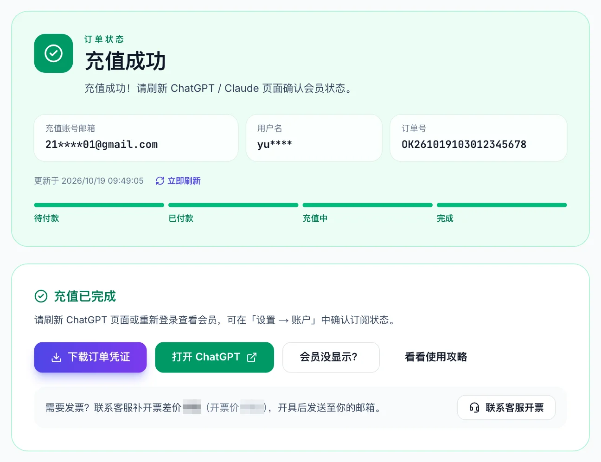

ChatGPT 充值怎么充？2026 国内充值 ChatGPT Plus / Pro 教程：支付宝、微信、价格、到账
最后更新：2026 年 10 月 20 日 · 本站只讲一件事：在国内怎么用人民币给自己的 ChatGPT 账号充值 Plus / Pro。
先把「充值」这两个字说清楚。这里说的 ChatGPT 充值，是用支付宝或微信付人民币，由平台把 Plus / Pro 会员开到你现在正在用的那个 ChatGPT 账号上。不是买一个别人注册好的账号，不是合租，也不需要你把密码交给任何人。付款后一般 3 分钟内生效，账号里的历史对话、自定义指令、GPTs 全部保留。
如果你已经知道这些，直接去充值入口；如果是第一次，往下看价格表和 4 步流程，10 分钟内能搞定。
ChatGPT 充值入口：okai66.com，支付宝 / 微信，选套餐即可开始 →
2026 年 ChatGPT 充值价格表
| 套餐 | 国内充值参考价 | OpenAI 官方价 | 说明 |
|---|---|---|---|
| Go | 以套餐页为准 | $8 / 月 | 轻量档，不含旗舰模型 |
| Plus | ¥165 / 月 | $20 / 月 | 最常充的档位，日常写作、学习、Codex 都够 |
| Pro 100 | ¥830 / 月 | $100 / 月 | Codex 额度约为 Plus 的 5 倍，可用 Pro 模型 |
| Pro 200 | ¥1,500 / 月 | $200 / 月 | 重度 Codex / 研究型用户 |
| Pro 500 | ¥4,100 / 月 | $500 / 月 | 团队级用量，带高速档 |
三件事要知道：
- 在线付款有 2% 的支付通道手续费，下单页会把商品金额和预估手续费分开显示。不想出这笔钱，可以加平台客服微信，由客服直接开通，免手续费。
- 价格随汇率小幅浮动，上表是 2026 年 10 月的参考价，以 套餐页 实时显示为准。
- 充值价比官方美元价折算高 ¥25–30，这是渠道、汇率、手续费和售后的成本。明显低于 ¥140 的 Plus 充值基本是黑卡，开通后几天到几周会被 OpenAI 回滚。为什么是这个价位，价格表 一页讲得更细。
ChatGPT 充值 4 步流程（支付宝 / 微信）
下面按「钱怎么付出去、会员怎么到账」的顺序走一遍。Plus、Pro 100、Pro 200 的操作完全一样，只是第 1 步选的套餐不同。整个过程只需要一个能登录 ChatGPT 的浏览器和一个支付宝或微信。
第 1 步：选套餐，进入下单页
打开充值入口，在套餐列表里点你要充的档位。第一次充值选 Plus 即可，Pro 档位的差别见 Pro 充值价格。

第 2 步：告诉系统充到哪个账号
平台需要知道「把会员开给谁」，但不需要你的密码。做法是：
- 用电脑或手机的浏览器（推荐 Chrome）登录你要充值的 ChatGPT 账号。确保这个浏览器里只登录了这一个账号。
- 在同一个浏览器的地址栏输入
chatgpt.com/api/auth/session打开，页面会显示一段 JSON 文本。全选、复制。

- 回到下单页，把这段文本粘贴进去。系统会自动校验，几秒后显示这个账号的邮箱、用户名和当前套餐。看一眼邮箱对不对，再往下走。

Tip
这段文本叫「会话信息」，里面没有密码，平台只用它来识别账号并写入会员。充值完成后退出重登一次，这段信息就作废了。想了解边界在哪里，看 代充安全分析。
第 3 步：确认订单，用支付宝或微信付款
填一个你记得住的手机号或邮箱，它只用来查订单和联系售后，不会发到 OpenAI。点「确认订单，去支付」。

支付页选支付宝或微信。电脑上会出一个二维码，用手机扫；手机上直接跳到支付宝 / 微信 App 付款。页面上显示的是商品金额加预估手续费，实付金额以支付宝 / 微信弹出的付款页为准。

支付宝和微信各自的细节（手机端怎么操作、内置浏览器的坑、账单怎么显示）分别写在 支付宝充值教程 和 微信充值教程 里。
第 4 步：等自动到账，回 ChatGPT 核对
付款成功后不需要再做任何操作。订单页状态会从「已付款」变成「充值中」，再变成「完成」，一般 3 分钟内。完成后订单页可以下载凭证，建议存一份。

回到 ChatGPT，刷新页面。左下角或模型选择器出现 Plus 标识就说明到账了。想看得更确定，打开「设置 → 账单」，这里会显示当前套餐和到期日。

多久到账，怎么判断已经到账
| 时间点 | 正常表现 | 不正常时怎么办 |
|---|---|---|
| 付款后 0–3 分钟 | 订单页「充值中」→「完成」 | 停在「充值中」超过 10 分钟，看 充值失败处理 |
| 完成后立刻 | 网页版 ChatGPT 刷新后显示 Plus | 没变化先退出重登，再等 2–3 分钟 |
| 完成后几分钟 | 手机 App、桌面客户端、Codex 同步显示 Plus | 多端同步有延迟，网页端最快 |
| 任何时候 | 设置 → 账单 显示套餐和到期日 | 以这里为准，比左下角标识可靠 |
账单页里如果写着「套餐已取消，将不再续订」，这是正常的，不是充值失败。充值开通的会员不会自动从你这里扣款，到期前回来再充一次就行。到期规则见 续费与到期说明。
充值前必读：4 种会被系统拦下或覆盖的情况
Warning
下面这几条，付款前对一遍，能避开绝大多数售后。
- 账号已经是 Plus。 再充 Plus 会提示「将覆盖现有会员」，不是叠加时长。Plus 升 Pro 同样是覆盖。想续费，等到期前 1–2 天再充。
- 账号在 Team / Business 工作区里。 系统校验时会直接拦下，不让你付钱。个人账号挂在工作区里是不能单独充 Plus 的，让管理员先把你移出工作区，或者换一个个人账号再充。
- 账号处于欠费宽限期。 之前官网绑过卡、扣款失败进入宽限期的账号，校验也会拦。先在官网账单页把旧订阅处理掉。
- 浏览器里登录了多个账号。 会话信息取的是当前登录的那一个，多账号时可能复制到错误的账号。操作前退出无关账号，第 2 步校验显示邮箱时再看一眼。
还有一条和安全有关：全程不需要密码。任何要你密码、要你登录验证码、要你「把账号给我们登一下」的充值渠道，直接关掉。
常见问题 FAQ
Q：ChatGPT 充值和买账号有什么区别？
充值是把会员开到你自己注册、自己在用的账号上，密码在你手里，历史记录保留。买账号是拿别人注册的号来用，随时可能被改密码或被 OpenAI 批量封禁。几十块的「独享号」「成品号」都属于后者，风险见 合租共享号分析。
Q：充值需要给密码吗？
不需要。只需要在你自己的浏览器里复制一段不含密码的会话信息，平台用它识别账号。要密码的渠道不要用。
Q：ChatGPT 充值多少钱？
Plus 约 ¥165 / 月，Pro 100 约 ¥830，Pro 200 约 ¥1,500，Pro 500 约 ¥4,100。在线付款另加 2% 手续费，加客服微信开通免手续费。以套餐页实时价为准。
Q：支付宝和微信哪个更好用？
效果一样，都是 3 分钟到账。手机端两者都是直接跳转 App 付款；电脑端都是扫码。区别在细节：微信内置浏览器打不开 ChatGPT 的会话页，要用系统浏览器操作，见 微信充值教程。
Q：充值多久到账？
付款后系统自动充值，一般 3 分钟内完成。网页版刷新最快能看到，App 和客户端会慢几分钟。超过 10 分钟没到账看 充值失败处理。
Q：安卓手机能充吗？
能。会员绑定的是 OpenAI 账号，不是设备。在安卓手机浏览器里完成充值，App 登同一账号就是 Plus。不需要 iPhone，也不需要美区 Apple ID。安卓用户的完整说明见 安卓开通指南。
Q：已经是 Plus，再充会叠加吗？
不会叠加，会覆盖。系统校验时会提示「将覆盖现有会员」。想续费请在到期前 1–2 天再充。
Q：充值失败钱会退吗？
校验被拦的情况付款不会发生。付款后充值失败，平台原路退回到你付款的支付宝 / 微信。退款时效以平台说明为准，凭证留好。
Q：充值会被封号吗？
本号直充、走正规支付通道的充值，目前没有普遍封号的反馈。真正的风险集中在黑卡代充（会被回滚）和共享账号（登录环境混乱触发风控）。没有任何渠道能承诺零风险，远离异常低价是最有效的防护。
Q：充值后 Codex 能用吗？
能。Plus 和 Pro 都包含 Codex 额度，开通后用同一账号登录 Codex 即可。额度差异和额度包购买见 Codex 说明。
一句话总结
ChatGPT 充值就是用支付宝 / 微信把 Plus / Pro 开到你自己的账号上：选套餐、粘贴一段不含密码的账号信息、付款、3 分钟到账。Plus ¥165，Pro 100 ¥830，Pro 200 ¥1,500，低于 ¥140 的不要碰。
okai66.com — 支付宝 / 微信充值 ChatGPT Plus / Pro，3 分钟到账 →
相关页面
- 支付宝充值 ChatGPT Plus 教程：手机端全流程
- 微信充值 ChatGPT Plus 教程：内置浏览器的坑
- ChatGPT Pro 充值多少钱：Pro 100 / 200 / 500 怎么选
- ChatGPT 充值失败 / 没到账怎么办
- 从零开始开通（注册账号、电脑 / iPhone 开通步骤）：ChatGPT Plus 开通教程
- 怎么判断一个充值平台靠不靠谱：ChatGPT 代充避坑指南
- 官网付款被拒、取消订阅、退款：ChatGPT 订阅百科
- 本文网页版（手机阅读更方便）：imi0801.github.io/chatgpt-guide
English summary: How to top up ChatGPT Plus / Pro from China with Alipay or WeChat Pay (2026). OpenAI's checkout rejects most Chinese bank cards and does not accept Alipay or WeChat Pay. A top-up service bridges the gap: you pick a plan, paste a password-free session string so the service knows which account to upgrade, pay in RMB via Alipay or WeChat Pay, and the subscription lands on your own account within about three minutes. Reference prices: Plus ¥165, Pro 100 ¥830, Pro 200 ¥1,500, Pro 500 ¥4,100, plus a 2% online payment fee (waived when ordering through customer service on WeChat). Anything far below ¥140 for Plus is almost certainly paid with stolen cards and will be reversed. Walkthrough and troubleshooting at okai66.com.
关于本文
- 本文作者与 OKAI66 存在商业关系，该平台提供 ChatGPT / Claude 订阅的付费充值服务。文中流程和价格以该平台为参考，请结合其它渠道自行判断。
- 本站与 OpenAI、Apple、支付宝、微信均无隶属关系。OpenAI 官方价格、套餐权益以 openai.com 为准，充值价格以平台实时显示为准。
- 内容按 CC BY-NC-SA 4.0 许可，转载请注明出处。